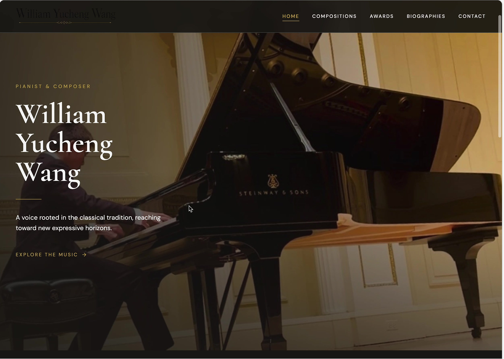
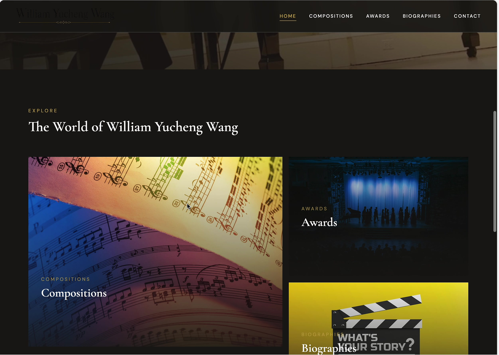
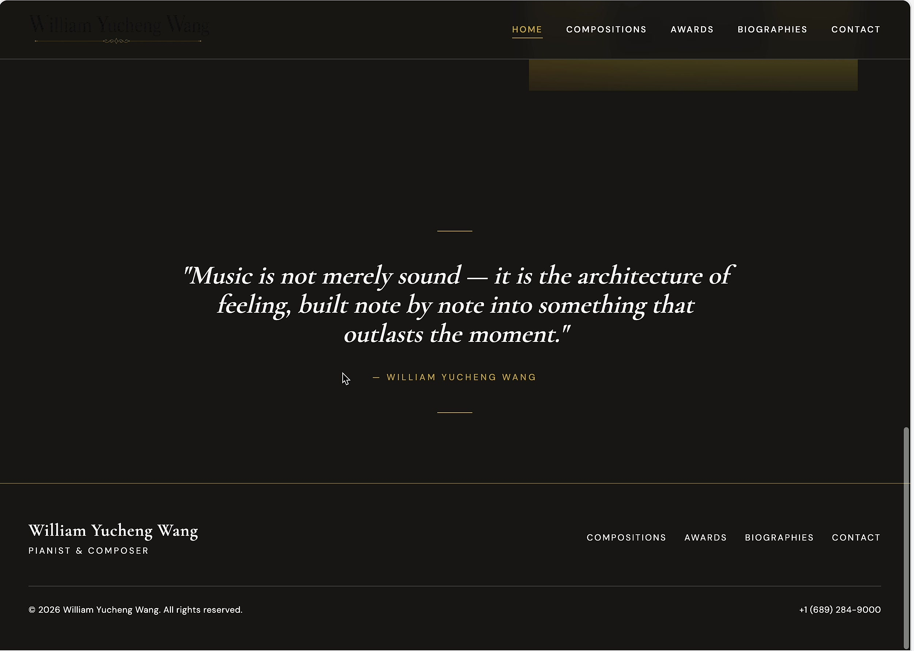

Works
Compositions
Original works spanning solo piano, chamber music, and orchestral writing — each piece a distinct chapter in an evolving artistic voice.
Reimagined Works
Remixes & Reimaginings
Reimaginings and reharmonizations of beloved works from the video, filtered through a contemporary sensibility.